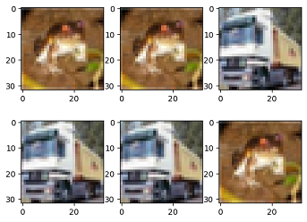
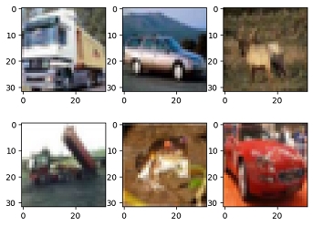
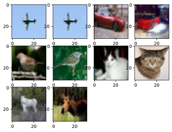

Data Sampling
To meet training requirements and solve problems such as too large datasets or uneven distribution of sample categories, MindSpore provides multiple samplers for different purposes to help users sample datasets. Users only need to import the sampler object when loading the dataset to implement data sampling.
MindSpore provides multiple samplers, such as RandomSampler, WeightedRandomSampler, and SubsetRandomSampler. In addition, users can customize sampler classes as required.
For details about how to use the sampler, see Sampler API.
Samplers
The following uses the CIFAR-10 dataset as an example to describe how to use several common MindSpore samplers.

The sample code in this section relies on
matplotlib, which can be installed with the commandpip install matplotlib. If the code is run in Notebook, you need to restart the kernel after the installation to execute the subsequent code.
from download import download
url = "https://mindspore-website.obs.cn-north-4.myhuaweicloud.com/notebook/datasets/cifar-10-binary.tar.gz"
path = download(url, "./", kind="tar.gz", replace=True)
Downloading data from https://mindspore-website.obs.cn-north-4.myhuaweicloud.com/notebook/datasets/cifar-10-binary.tar.gz (162.2 MB)
file_sizes: 100%|████████████████████████████| 170M/170M [00:16<00:00, 10.4MB/s]
Extracting tar.gz file...
Successfully downloaded / unzipped to ./
The directory structure of the unpacked dataset file is as follows:
.
└── cifar-10-batches-bin
├── batches.meta.txt
├── data_batch_1.bin
├── data_batch_2.bin
├── data_batch_3.bin
├── data_batch_4.bin
├── data_batch_5.bin
├── readme.html
└── test_batch.bin
RandomSampler
Randomly samples a specified amount of data from the index sequence.
The following sample uses a random sampler to randomly sample 5 data from the dataset with and without replacement, and prints them for display. To observe the effect of samplers with and without replacement, a dataset with a small amount of data is customized.
from mindspore.dataset import RandomSampler, NumpySlicesDataset
np_data = [1, 2, 3, 4, 5, 6, 7, 8] # Dataset
# Define a sampler with replacement to sample five pieces of data.
sampler1 = RandomSampler(replacement=True, num_samples=5)
dataset1 = NumpySlicesDataset(np_data, column_names=["data"], sampler=sampler1)
print("With Replacement: ", end='')
for data in dataset1.create_tuple_iterator(output_numpy=True):
print(data[0], end=' ')
# Define a sampler without replacement to sample five pieces of data.
sampler2 = RandomSampler(replacement=False, num_samples=5)
dataset2 = NumpySlicesDataset(np_data, column_names=["data"], sampler=sampler2)
print("\nWithout Replacement: ", end='')
for data in dataset2.create_tuple_iterator(output_numpy=True):
print(data[0], end=' ')
With Replacement: 4 5 6 6 1
Without Replacement: 4 1 5 6 2
According to the preceding result, when the sampler with replacement is used, the same piece of data may be obtained for multiple times. When the sampler without replacement is used, the same piece of data can be obtained only once.
WeightedRandomSampler
Specify the sampling probability list with the length N. A specified number of data is randomly sampled from the first N samples based on the probability.
The following example uses WeightedRandomSampler to obtain six samples by probability from the first 10 samples in the CIFAR-10 dataset, and displays shapes and labels of the read data.
import math
import matplotlib.pyplot as plt
from mindspore.dataset import WeightedRandomSampler, Cifar10Dataset
%matplotlib inline
DATA_DIR = "./cifar-10-batches-bin/"
# Specify the sampling probability of the first 10 samples and sample them.
weights = [0.8, 0.5, 0, 0, 0, 0, 0, 0, 0, 0]
sampler = WeightedRandomSampler(weights, num_samples=6)
dataset = Cifar10Dataset(DATA_DIR, sampler=sampler) # Load data.
def plt_result(dataset, row):
"""Display the sampling result."""
num = 1
for data in dataset.create_dict_iterator(output_numpy=True):
print("Image shape:", data['image'].shape, ", Label:", data['label'])
plt.subplot(row, math.ceil(dataset.get_dataset_size() / row), num)
image = data['image']
plt.imshow(image, interpolation="None")
num += 1
plt_result(dataset, 2)
Image shape: (32, 32, 3) , Label: 6
Image shape: (32, 32, 3) , Label: 6
Image shape: (32, 32, 3) , Label: 9
Image shape: (32, 32, 3) , Label: 9
Image shape: (32, 32, 3) , Label: 9
Image shape: (32, 32, 3) , Label: 6

According to the preceding result, six pieces of data are randomly sampled from the first 10 samples. Only the first two samples whose probability is not 0 can be sampled.
SubsetRandomSampler
Randomly sample the specified number of pieces of sample data from the specified sample index subsequence.
The following example uses SubsetRandomSampler to obtain three samples from the specified subset in the CIFAR-10 dataset, and displays shapes and labels of the read data.
from mindspore.dataset import SubsetRandomSampler
# Specify a sample index subset.
indices = [0, 1, 2, 3, 4, 5, 6, 7, 8, 9]
sampler = SubsetRandomSampler(indices, num_samples=6)
# Load data.
dataset = Cifar10Dataset(DATA_DIR, sampler=sampler)
plt_result(dataset, 2)
Image shape: (32, 32, 3) , Label: 9
Image shape: (32, 32, 3) , Label: 1
Image shape: (32, 32, 3) , Label: 4
Image shape: (32, 32, 3) , Label: 9
Image shape: (32, 32, 3) , Label: 6
Image shape: (32, 32, 3) , Label: 1

According to the preceding result, the sampler randomly samples six samples from the index subset.
PKSampler
Samples K pieces of data from each category in the specified dataset P.
The following example uses PKSampler to obtain 2 samples (up to 20 samples) from each category in the CIFAR-10 dataset, and displays shapes and labels of the read data.
from mindspore.dataset import PKSampler
# 2 samples for each category, up to 10 samples.
sampler = PKSampler(num_val=2, class_column='label', num_samples=10)
dataset = Cifar10Dataset(DATA_DIR, sampler=sampler)
plt_result(dataset, 3)
Image shape: (32, 32, 3) , Label: 0
Image shape: (32, 32, 3) , Label: 0
Image shape: (32, 32, 3) , Label: 1
Image shape: (32, 32, 3) , Label: 1
Image shape: (32, 32, 3) , Label: 2
Image shape: (32, 32, 3) , Label: 2
Image shape: (32, 32, 3) , Label: 3
Image shape: (32, 32, 3) , Label: 3
Image shape: (32, 32, 3) , Label: 4
Image shape: (32, 32, 3) , Label: 4

According to the preceding result, the sampler obtains two samples for each label in the dataset. There are 10 samples in total.
DistributedSampler
Samples dataset shards in the distributed training.
The following sample uses distributedsampler to divide the constructed dataset into 4 slices, take a sample in the each slice, sample 3 samples in total, and display the read data.
from mindspore.dataset import DistributedSampler
# Customize the dataset.
data_source = [0, 1, 2, 3, 4, 5, 6, 7, 8, 9, 10, 11]
# Divide the constructed dataset into four slices, and sample 3 samples in total.
sampler = DistributedSampler(num_shards=4, shard_id=0, shuffle=False, num_samples=3)
dataset = NumpySlicesDataset(data_source, column_names=["data"], sampler=sampler)
# Print the dataset.
for data in dataset.create_dict_iterator():
print(data)
{'data': Tensor(shape=[], dtype=Int64, value= 0)}
{'data': Tensor(shape=[], dtype=Int64, value= 4)}
{'data': Tensor(shape=[], dtype=Int64, value= 8)}
According to the preceding result, the dataset is divided into four slices, and each slice has three samples. The samples in the slice whose ID is 0 are obtained this time.
Customized Sampler
Users can define a sampler and apply it to a dataset.
__iter__ mode
Users can inherit the Sampler base class and customize the sampling mode of the sampler by implementing the __iter__ method.
The following example defines a sampler with an interval of 2 samples from subscript 0 to subscript 9, takes the sampler as the customized dataset, and displays the read data.
import mindspore.dataset as ds
# Customize a sampler.
class MySampler(ds.Sampler):
def __iter__(self):
for i in range(0, 10, 2):
yield i
# Customize a dataset.
np_data = ['a', 'b', 'c', 'd', 'e', 'f', 'g', 'h', 'i', 'j', 'k', 'l']
# Load data.
dataset = ds.NumpySlicesDataset(np_data, column_names=["data"], sampler=MySampler())
for data in dataset.create_tuple_iterator(output_numpy=True):
print(data[0], end=' ')
a c e g i
According to the preceding information, the customized sampler reads the sample data whose subscripts are 0, 2, 4, 6, and 8, which is the same as the sampling purpose of the customized sampler.
__getitem__ mode
Users can define a sampler class, which contains __init__, __getitem__ and __len__ methods.
The following example defines a sampler with index ids [3, 4, 3, 2, 0, 11, 5, 5, 5, 9, 1, 11, 11, 11, 11, 8] which will be applied to a custom dataset and display the read data.
import mindspore.dataset as ds
class MySampler():
def __init__(self):
self.index_ids = [3, 4, 3, 2, 0, 11, 5, 5, 5, 9, 1, 11, 11, 11, 11, 8]
def __getitem__(self, index):
return self.index_ids[index]
def __len__(self):
return len(self.index_ids)
# Customize a dataset.
np_data = ['a', 'b', 'c', 'd', 'e', 'f', 'g', 'h', 'i', 'j', 'k', 'l']
# Load data.
dataset = ds.NumpySlicesDataset(np_data, column_names=["data"], sampler=MySampler())
for data in dataset.create_tuple_iterator(output_numpy=True):
print(data[0], end=' ')
d e d c a l f f f j b l l l l i
According to the preceding information, the customized sampler reads the sample data which index is [3, 4, 3, 2, 0, 11, 5, 5, 5, 9, 1, 11, 11, 11, 11, 8] , which is the same as the sampling purpose of the customized sampler.